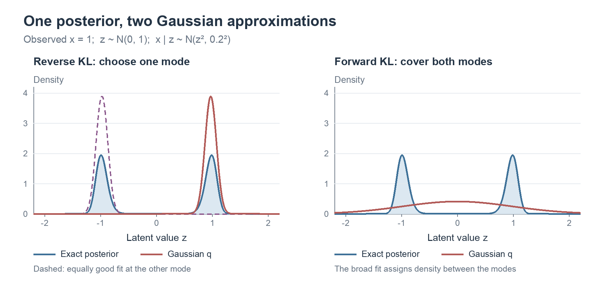
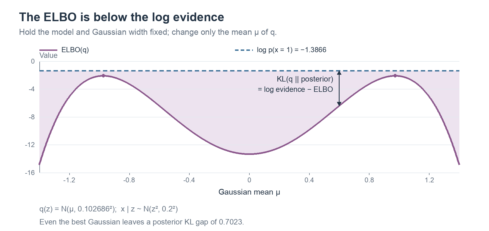
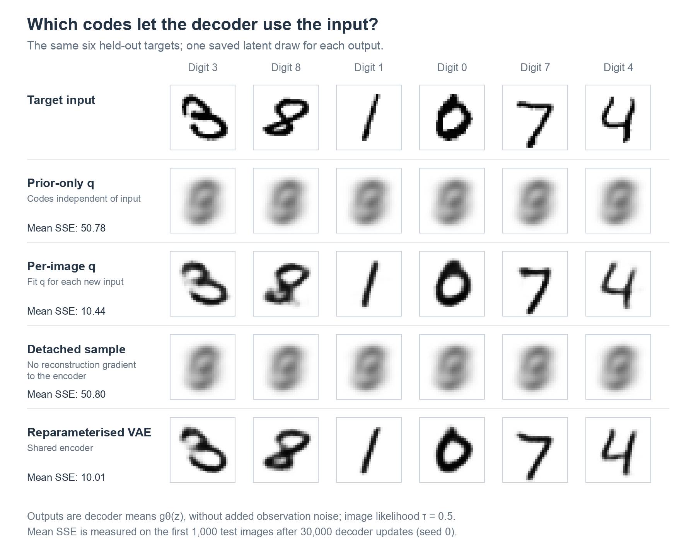

Lecture 10: Unsupervised Learning II — Variational Inference and Variational Autoencoders
Summary of Key Ideas
In Lecture 9, we learnt representations by reconstructing observations. An encoder mapped an image to a code, and a decoder used that code to reconstruct the image. We also tried choosing codes ourselves and looking at the resulting images.
Now suppose we want to generate a new image. We need a way to sample a code, so we introduce a prior over codes and a likelihood for images given a code. To train this model, we will use the posterior distribution of each image's code.
We begin with a simpler example: estimating a cart's velocity from a noisy energy reading. The posterior is easy to describe but harder to calculate. Variational inference lets us approximate it with a Gaussian, whose parameters we fit by maximising the evidence lower bound (ELBO).
We will then apply the same method to images and compare three choices for the approximate posterior. These lead to the variational autoencoder (VAE), whose encoder predicts a Gaussian for each input image. The reparameterisation trick allows us to train this encoder and the decoder together using backpropagation.
Learning Objectives
By the end of this lesson, you should be able to:
- Explain why computing a posterior can require a difficult integral.
- Compute a KL divergence and express it as an expectation.
- Explain how forward and reverse KL differ, and why reverse KL is useful for variational inference.
- Derive the ELBO and relate it to the log evidence and posterior KL.
- Write the ELBO for the energy-sensor model and for a Gaussian image model.
- Compare fixing the approximate posterior to the prior, fitting one Gaussian per image, and predicting its parameters with an encoder.
- Explain how reparameterisation allows us to train a VAE's encoder.
- Distinguish reconstructing an observed image from generating a new image.
Posterior Inference
An Energy Sensor
Consider a cart with velocity z and mass m=2, so its kinetic energy is \tfrac12 mz^2=z^2. A sensor measures this energy with Gaussian noise:
\[x=z^2+\epsilon, \qquad \epsilon\sim\mathcal{N}(0,\tau^2), \qquad \tau=0.2.\]
With a standard normal prior over velocity, the model is
\[p(z)=\mathcal{N}(z;0,1), \qquad p(x\mid z)=\mathcal{N}(x;z^2,\tau^2).\]
We observe x=1 and want the posterior p(z\mid x). Since velocities near +1 and -1 both give squared velocities near 1, the posterior has two peaks, shifted slightly towards zero by the prior.
Optional exploration: use the energy-sensor demo to compare readings for equal speeds in opposite directions.
The Normalising Integral
Using Bayes' rule,
\[p(z\mid x)=\frac{p(x\mid z)p(z)}{p(x)}, \qquad p(x)=\int p(x\mid z)p(z)\,dz.\]
We can evaluate the numerator at any chosen z, but the normalising constant p(x), called the evidence, requires an integral. Numerical integration works well for this scalar example; with d latent coordinates, however, a grid with 100 values per coordinate has 100^d points. A neural likelihood can also make the integral difficult to solve analytically.
Variational inference avoids calculating this normaliser by fitting a simpler distribution directly to the posterior.
Approximating a Distribution
A Family and an Objective
For the sensor example, we will approximate the posterior with a Gaussian:
\[q_{\mu,s}(z)=\mathcal{N}(z;\mu,s^2), \qquad \mu\in\mathbb{R},\quad s>0.\]
Each choice of mean \mu and standard deviation s gives one distribution in our family \mathcal{Q}. We want to find the pair that gives the best approximation, keeping the observed x and known noise level \tau fixed. If d(q,p) measures the difference from the target p, we can write this as
\[q^*=\arg\min_{q\in\mathcal{Q}}d(q,p).\]
A single Gaussian cannot reproduce both posterior peaks, so we need to decide how to measure the approximation error. We will use KL divergence.
KL Divergence as an Expectation
The Kullback–Leibler divergence, or KL divergence, is
\[\boxed{ D_{\mathrm{KL}}[q\|p] =\int q(z)\log\frac{q(z)}{p(z)}\,dz =\mathbb{E}_q[\log q(z)-\log p(z)]. }\]
The subscript q identifies the distribution used to weight the average. For discrete distributions, the integral becomes a sum:
\[D_{\mathrm{KL}}[q\|p] =\sum_k q_k\log\frac{q_k}{p_k}.\]
KL divergence is nonnegative and equals zero when the distributions match. It is generally asymmetric, so exchanging its arguments changes its value. We use natural logarithms, giving values in nats.
A Numerical Example
Consider distributions over outcomes 1 and 0:
| Outcome | Target p_k | Approximation q_k | \log(q_k/p_k) | q_k\log(q_k/p_k) |
|---|---|---|---|---|
| 1 | 0.8 | 0.5 | -0.4700 | -0.2350 |
| 0 | 0.2 | 0.5 | 0.9163 | 0.4581 |
Adding the weighted contributions gives
\[D_{\mathrm{KL}}[q\|p] =0.5\log\frac{0.5}{0.8} +0.5\log\frac{0.5}{0.2} \approx0.2231.\]
Individual contributions can be negative even though their sum is nonnegative. Exchanging the distributions changes the weights as well as the log ratios:
\[D_{\mathrm{KL}}[p\|q] =0.8\log\frac{0.8}{0.5} +0.2\log\frac{0.2}{0.5} \approx0.1927.\]
Optional exploration: change p and q in the Bernoulli KL demo. Compare the two directions and try assigning zero probability to one outcome.
Forward and Reverse KL
Relative to a target p, the two directions are
\[\begin{aligned} \text{Forward KL:}\quad D_{\mathrm{KL}}[p\|q]&=\mathbb{E}_p[\log p-\log q],\\ \text{Reverse KL:}\quad D_{\mathrm{KL}}[q\|p]&=\mathbb{E}_q[\log q-\log p]. \end{aligned}\]
Reverse KL is also called backward KL. If the family can represent the target exactly, both objectives are minimised by matching it; for example, a Gaussian target \mathcal{N}(1,0.5^2) is matched by \mu=1,s=0.5.
For our two-peak posterior, the choice of direction matters. Forward KL averages under the posterior, so both peaks receive substantial weight and assigning little q density to either is costly. Its best Gaussian is broad, with mean zero and standard deviation approximately 0.979.
Reverse KL averages under q. A broad Gaussian puts probability in the valley between the peaks, where the posterior density is low and the log ratio is large. A narrow Gaussian near either peak has a lower reverse KL, giving two equally good fits with means approximately \pm0.974 and standard deviation 0.103.

Blue shows the posterior and red shows the fitted Gaussian. The dashed curve is the alternative reverse-KL fit at the negative peak.
Why Use Reverse KL for Inference?
Our target is p(z\mid x), so forward KL would require an expectation under the posterior we are trying to approximate. Reverse KL instead averages under q, which we choose to be easy to evaluate and sample from:
\[\min_{\mu\in\mathbb{R},\,s>0} D_{\mathrm{KL}}\big[q_{\mu,s}(z)\|p(z\mid x)\big].\]
The objective still contains the posterior density, but expanding it gives an equivalent optimisation that does not require the normalising constant.
The Evidence Lower Bound
Deriving the ELBO
Expand the posterior inside reverse KL and factor the joint density:
\[\begin{aligned} D_{\mathrm{KL}}[q\|p(z\mid x)] &=\mathbb{E}_q[\log q(z)-\log p(z\mid x)]\\ &=\mathbb{E}_q[\log q(z)-\log p(x,z)]+\log p(x)\\ &=\mathbb{E}_q[\log q(z)-\log p(x\mid z)-\log p(z)] +\log p(x)\\ &=-\mathbb{E}_q[\log p(x\mid z)] +D_{\mathrm{KL}}[q(z)\|p(z)] +\log p(x). \end{aligned}\]
We take \log p(x) outside the expectation because it does not depend on z. The remaining terms define the evidence lower bound:
\[\boxed{ \mathcal{L}(q;x) =\mathbb{E}_q[\log p(x\mid z)] -D_{\mathrm{KL}}[q(z)\|p(z)]. }\]
Both terms use known densities, and their expectations can be calculated analytically or estimated by sampling.
The Bound and Its Gap
Rearranging the derivation gives
\[\boxed{ \log p(x) =\mathcal{L}(q;x) +D_{\mathrm{KL}}[q(z)\|p(z\mid x)] \ge\mathcal{L}(q;x). }\]
For a fixed model and observation, \log p(x) is constant with respect to q, so maximising the ELBO minimises the reverse KL to the posterior. Equality holds when q matches the posterior; otherwise, the posterior KL is the gap between the bound and log evidence.
The two KL terms have different roles. The posterior KL measures approximation error, while the prior KL appears inside the objective we optimise. The expected log likelihood favours distributions that give high likelihood to the observation, and the prior KL penalises differences between q and the prior. We optimise their combination.
A Worked ELBO for the Energy Sensor
The Expected Log Likelihood
For our Gaussian likelihood and q(z)=\mathcal{N}(\mu,s^2),
\[\mathbb{E}_q[\log p(x\mid z)] =-\frac12\log(2\pi\tau^2) -\frac{\mathbb{E}_q[(x-z^2)^2]}{2\tau^2}.\]
Expanding the square gives
\[\mathbb{E}_q[(x-z^2)^2] =x^2-2x\mathbb{E}_q[z^2]+\mathbb{E}_q[z^4].\]
Using the Gaussian moments
\[\mathbb{E}_q[z^2]=\mu^2+s^2, \qquad \mathbb{E}_q[z^4]=\mu^4+6\mu^2s^2+3s^4,\]
we obtain
\[\begin{aligned} \mathbb{E}_q[(x-z^2)^2] &=x^2-2x(\mu^2+s^2)+\mu^4+6\mu^2s^2+3s^4\\ &=(x-\mu^2-s^2)^2+4\mu^2s^2+2s^4. \end{aligned}\]
Both the location and spread of q affect the expected reconstruction error.
The KL to the Prior
With p(z)=\mathcal{N}(0,1), the log-density difference is
\[\log q(z)-\log p(z) =-\log s-\frac{(z-\mu)^2}{2s^2}+\frac{z^2}{2}.\]
Taking the expectation under q, with \mathbb{E}_q[(z-\mu)^2]=s^2, gives
\[\boxed{ \begin{aligned} D_{\mathrm{KL}}[q(z)\|p(z)] &=-\log s-\frac12+\frac{\mu^2+s^2}{2}\\ &=\frac12(\mu^2+s^2-1-\log s^2). \end{aligned} }\]
This term is minimised at \mu=0,s=1, where q equals the prior.
The Complete Objective
Combining the two terms gives
\[\boxed{ \begin{aligned} \mathcal{L}(\mu,s;x) ={}&-\frac12\log(2\pi\tau^2)\\ &-\frac{(x-\mu^2-s^2)^2+4\mu^2s^2+2s^4}{2\tau^2}\\ &-\frac12(\mu^2+s^2-1-\log s^2). \end{aligned} }\]
We can now fit q by maximising this expression over \mu and s>0, without calculating p(x). To keep s positive during optimisation, we can parameterise it as s=\exp(a) and optimise over an unconstrained a.
For x=1 and \tau=0.2, numerical integration gives \log p(x)\approx-1.3866:
| Approximation q | ELBO | Posterior KL, \log p(x)-\mathcal{L} |
|---|---|---|
| \mathcal{N}(0,1) | -24.3095 | 22.9229 |
| \mathcal{N}(1,0.2^2) | -2.9989 | 1.6123 |
| Best Gaussian near the positive peak, \mathcal{N}(0.97384,0.10269^2) | -2.0889 | 0.7023 |
Increasing the ELBO reduces the posterior KL by the same amount. Even the best Gaussian leaves a gap because it cannot match the two-peak posterior, and symmetry gives an equally good negative-mean solution.

Log evidence stays fixed as we vary the Gaussian mean. The vertical gap is the posterior KL.
Optional exploration: compare the three distributions in the ELBO gap demo, then try different starting points in the ELBO optimisation demo.
A Latent-Variable Model of Images
The Prior and Decoder
We now use a vector-valued code \mathbf{z}\in\mathbb{R}^{d} and a neural decoder g_{\theta} to define an image model:
\[\boxed{ p(\mathbf{z})=\mathcal{N}(\mathbf{0},\mathbf{I}), \qquad p_{\theta}(\mathbf{x}\mid\mathbf{z}) =\mathcal{N}\big( \mathbf{x};g_{\theta}(\mathbf{z}),\tau^2\mathbf{I} \big). }\]
The prior specifies how to sample codes. Given a code, the CNN decoder g_{\theta} produces the mean image, and \tau sets the observation noise around that mean. We learn the decoder weights \theta while keeping \tau fixed. The digit experiment uses d=16 latent coordinates, D=784 pixels for a 28\times28 image, and \tau=0.5.
The Gaussian log likelihood is
\[\log p_{\theta}(\mathbf{x}\mid\mathbf{z}) =-\frac{D}{2}\log(2\pi\tau^2) -\frac{\|\mathbf{x}-g_{\theta}(\mathbf{z})\|^2}{2\tau^2},\]
so, given a code and fixed \tau, maximising it is equivalent to minimising squared reconstruction error.
Learning Without Observed Codes
Our dataset contains images \mathcal{D}=\{\mathbf{x}_n\}_{n=1}^{N} but no codes. Maximum likelihood would maximise \sum_n\log p_{\theta}(\mathbf{x}_n), requiring the integral
\[\begin{aligned} p_{\theta}(\mathbf{x}) &=\int p_{\theta}(\mathbf{x}\mid\mathbf{z})p(\mathbf{z})\,d\mathbf{z}\\ &=\mathbb{E}_{p(\mathbf{z})}[p_{\theta}(\mathbf{x}\mid\mathbf{z})]\\ &\approx\frac1K\sum_{k=1}^{K} p_{\theta}(\mathbf{x}\mid\mathbf{z}^{(k)}), \qquad \mathbf{z}^{(k)}\sim p(\mathbf{z}). \end{aligned}\]
For a neural decoder, this integral is generally difficult to calculate. Prior sampling can give a noisy estimate because most sampled codes decode to images unlike the target, leaving only a few large terms in the average.
Instead, we train the model using the ELBO:
\[\mathcal{L}(\theta,q;\mathbf{x}) =\mathbb{E}_q[\log p_{\theta}(\mathbf{x}\mid\mathbf{z})] -D_{\mathrm{KL}}[q(\mathbf{z})\|p(\mathbf{z})].\]
There are now two sets of quantities to learn. With the decoder fixed, we fit q to its posterior; with q fixed, we improve the decoder's likelihood for the sampled codes. We use the ELBO for both, and it equals the log likelihood when q matches the exact posterior.
We still need to choose how to represent q. The next three attempts use the same image model but make different choices for this distribution.
Three Choices for the Approximate Posterior
The Dataset ELBO
So far, we have written the ELBO for one observation. For a dataset of N images, each image \mathbf{x}_n has its own code \mathbf{z}_n. We assume that the image–code pairs are independent and choose an approximate posterior that also factorises across images:
\[\begin{aligned} p_{\theta}(\mathbf{x}_{1:N},\mathbf{z}_{1:N}) &=\prod_{n=1}^{N}p_{\theta}(\mathbf{x}_n\mid\mathbf{z}_n)p(\mathbf{z}_n),\\ q(\mathbf{z}_{1:N})&=\prod_{n=1}^{N}q_n(\mathbf{z}_n). \end{aligned}\]
Here \mathbf{x}_{1:N} and \mathbf{z}_{1:N} collect all the images and codes, while q_n is the approximate posterior for image n.
Apply the ELBO to the whole dataset:
\[\begin{aligned} \mathcal{L}_{\mathrm{data}} ={}&\mathbb{E}_q[\log p_{\theta}(\mathbf{x}_{1:N}\mid\mathbf{z}_{1:N})]\\ &-D_{\mathrm{KL}}[q(\mathbf{z}_{1:N})\|p(\mathbf{z}_{1:N})]. \end{aligned}\]
Taking the logarithm of each product gives a sum over images. Expanding the KL in the same way gives
\[\begin{aligned} \mathcal{L}_{\mathrm{data}} ={}&\mathbb{E}_q\left[\sum_{n=1}^{N} \log p_{\theta}(\mathbf{x}_n\mid\mathbf{z}_n)\right]\\ &-\mathbb{E}_q\left[\sum_{n=1}^{N} \log\frac{q_n(\mathbf{z}_n)}{p(\mathbf{z}_n)}\right]. \end{aligned}\]
We can take the sums outside the expectations. Each term depends on only one code \mathbf{z}_n, so its expectation under the full q reduces to an expectation under q_n:
\[\boxed{ \mathcal{L}_{\mathrm{data}} =\sum_{n=1}^{N}\left( \mathbb{E}_{q_n}[\log p_{\theta}(\mathbf{x}_n\mid\mathbf{z}_n)] -D_{\mathrm{KL}}[q_n\|p(\mathbf{z}_n)] \right). }\]
Each image contributes its own expected log likelihood and prior KL. We will use this expression for all three attempts.
Attempt 1: Fix Every Approximation to the Prior
The simplest choice is to use the prior for every image:
\[q_n(\mathbf{z}_n)=p(\mathbf{z}_n)=\mathcal{N}(\mathbf{0},\mathbf{I}).\]
Substitute this into the dataset ELBO. The expectation is now under the prior, and every KL term is zero:
\[\begin{aligned} \mathcal{L}_1(\theta) ={}&\sum_n\mathbb{E}_{p(\mathbf{z}_n)} [\log p_{\theta}(\mathbf{x}_n\mid\mathbf{z}_n)]\\ &-\sum_n\underbrace{D_{\mathrm{KL}}[p(\mathbf{z}_n)\|p(\mathbf{z}_n)]}_{0}\\ ={}&\sum_n\mathbb{E}_{p(\mathbf{z}_n)} [\log p_{\theta}(\mathbf{x}_n\mid\mathbf{z}_n)]. \end{aligned}\]
Next, substitute the Gaussian log likelihood:
\[\begin{aligned} \mathcal{L}_1(\theta) ={}&\sum_n\left(-\frac{D}{2}\log(2\pi\tau^2)\right)\\ &-\frac{1}{2\tau^2}\sum_n\mathbb{E}_{p(\mathbf{z}_n)} \left[\|\mathbf{x}_n-g_{\theta}(\mathbf{z}_n)\|^2\right]\\ ={}&C-\frac{1}{2\tau^2}\sum_n \mathbb{E}_{p(\mathbf{z}_n)} \left[\|\mathbf{x}_n-g_{\theta}(\mathbf{z}_n)\|^2\right], \end{aligned}\]
where C=-ND\log(2\pi\tau^2)/2. Since C and \tau are fixed, maximising this ELBO is equivalent to
\[\min_{\theta}\sum_n \mathbb{E}_{p(\mathbf{z}_n)} \left[\|\mathbf{x}_n-g_{\theta}(\mathbf{z}_n)\|^2\right].\]
Only the decoder weights are learnt. For each target image, we draw a code from the same prior and train the decoder to reconstruct that target.
Why Does This Learn the Average Image?
All images use the same prior, so we can take the sum inside a single expectation and write the total error as
\[\mathbb{E}_{p(\mathbf{z})}\left[ \sum_n\|\mathbf{x}_n-g_{\theta}(\mathbf{z})\|^2 \right].\]
For each code, the decoder output is compared with every target image. Write this output as \mathbf{y}=g_{\theta}(\mathbf{z}). The error inside the expectation is
\[\sum_{n=1}^{N}\|\mathbf{x}_n-\mathbf{y}\|^2.\]
As in the k-means centre update from Lecture 9, differentiate and set the derivative to zero:
\[2N\mathbf{y}-2\sum_{n=1}^{N}\mathbf{x}_n=0 \quad\Longrightarrow\quad \mathbf{y}=\frac1N\sum_{n=1}^{N}\mathbf{x}_n=\bar{\mathbf{x}}.\]
The best output is the average image at every code. We need a way to give different images different code distributions.
Attempt 2: Fit One Gaussian per Image
Now give each image its own mean and standard deviation vectors:
\[q_n(\mathbf{z}_n) =\mathcal{N}\big( \mathbf{z}_n;\boldsymbol{\mu}_n, \operatorname{diag}(\mathbf{s}_n^2) \big).\]
Both vectors have d entries, and the diagonal covariance makes the coordinates independent under q_n. We will learn these Gaussian parameters along with the decoder weights.
First, consider the likelihood term for image n. The same Gaussian likelihood calculation gives
\[\begin{aligned} \mathbb{E}_{q_n}[\log p_{\theta}(\mathbf{x}_n\mid\mathbf{z}_n)] ={}&-\frac{D}{2}\log(2\pi\tau^2)\\ &-\frac{1}{2\tau^2}\mathbb{E}_{q_n} \left[\|\mathbf{x}_n-g_{\theta}(\mathbf{z}_n)\|^2\right]. \end{aligned}\]
The expectation is now under the image's fitted q_n. Samples can therefore concentrate on codes whose decoded images are close to \mathbf{x}_n.
Next, calculate the prior KL. Both q_n and the standard normal prior factorise over coordinates, so their log-density ratio is a sum over j. Taking its expectation gives a sum of scalar Gaussian KLs:
\[\begin{aligned} D_{\mathrm{KL}}[q_n\|p(\mathbf{z}_n)] &=\sum_{j=1}^{d} D_{\mathrm{KL}}\left[ \mathcal{N}(\mu_{nj},s_{nj}^2)\|\mathcal{N}(0,1) \right]\\ &=\frac12\sum_{j=1}^{d} \left(\mu_{nj}^2+s_{nj}^2-1-\log s_{nj}^2\right). \end{aligned}\]
The second line uses the Gaussian KL formula from the energy-sensor example. Combining the likelihood and KL terms, then summing over images, gives
\[\boxed{ \begin{aligned} \mathcal{L}_2 =\sum_{n=1}^{N}\Bigg( &-\frac{1}{2\tau^2} \mathbb{E}_{q_n}\left[ \|\mathbf{x}_n-g_{\theta}(\mathbf{z}_n)\|^2 \right]\\ &-\frac12\sum_{j=1}^{d} \left(\mu_{nj}^2+s_{nj}^2-1-\log s_{nj}^2\right) \Bigg)+C. \end{aligned} }\]
We maximise this over
\[\theta,\qquad \boldsymbol{\mu}_1,\ldots,\boldsymbol{\mu}_N, \qquad \mathbf{s}_1,\ldots,\mathbf{s}_N,\]
with positive standard deviations. There are 2Nd Gaussian parameters in addition to the decoder weights. The reconstruction term encourages accurate reconstructions from the sampled codes, while the prior KL penalises moving each Gaussian away from the prior.
Using the Learnt Model
We can already generate new images by sampling from the prior and applying the trained decoder. For a new observed image, however, we have no fitted Gaussian yet. We keep the decoder fixed, initialise a new mean and standard deviation vector, and maximise that image's ELBO.
This works, but it requires a new optimisation for every input. We can make inference faster by learning a function that predicts the Gaussian parameters.
Attempt 3: Predict the Gaussian with an Encoder
Let an encoder with weights \phi compute
\[\boldsymbol{\mu}_n=\boldsymbol{\mu}_{\phi}(\mathbf{x}_n), \qquad \mathbf{s}_n=\mathbf{s}_{\phi}(\mathbf{x}_n).\]
These outputs define the approximate posterior
\[q_n(\mathbf{z}_n) =q_{\phi}(\mathbf{z}_n\mid\mathbf{x}_n) =\mathcal{N}\big( \mathbf{z}_n;\boldsymbol{\mu}_n, \operatorname{diag}(\mathbf{s}_n^2) \big).\]
The encoder produces d means and d standard deviations, from which we sample a code. We will use \boldsymbol{\mu}_n and \mathbf{s}_n below to keep the equations readable, remembering that both now depend on \phi and the input image.
Start from the dataset ELBO and substitute the encoder's distribution:
\[\begin{aligned} \mathcal{L}_3(\theta,\phi) ={}&\sum_n\mathbb{E}_{q_{\phi}(\mathbf{z}_n\mid\mathbf{x}_n)} [\log p_{\theta}(\mathbf{x}_n\mid\mathbf{z}_n)]\\ &-\sum_n D_{\mathrm{KL}}[ q_{\phi}(\mathbf{z}_n\mid\mathbf{x}_n)\|p(\mathbf{z}_n)]. \end{aligned}\]
Replacing the Gaussian log likelihood gives
\[\begin{aligned} \mathcal{L}_3(\theta,\phi) ={}&C-\frac{1}{2\tau^2}\sum_n \mathbb{E}_{q_{\phi}(\mathbf{z}_n\mid\mathbf{x}_n)} \left[\|\mathbf{x}_n-g_{\theta}(\mathbf{z}_n)\|^2\right]\\ &-\sum_n D_{\mathrm{KL}}[ q_{\phi}(\mathbf{z}_n\mid\mathbf{x}_n)\|p(\mathbf{z}_n)]. \end{aligned}\]
Each q_{\phi} is still a diagonal Gaussian, so we use the same KL formula as in Attempt 2:
\[\boxed{ \begin{aligned} \mathcal{L}_3(\theta,\phi) ={}&C-\frac{1}{2\tau^2}\sum_n \mathbb{E}_{q_{\phi}(\mathbf{z}_n\mid\mathbf{x}_n)} \left[\|\mathbf{x}_n-g_{\theta}(\mathbf{z}_n)\|^2\right]\\ &-\frac12\sum_n\sum_{j=1}^{d} \left(\mu_{nj}^2+s_{nj}^2-1-\log s_{nj}^2\right). \end{aligned} }\]
We now optimise the two networks' weights:
\[\max_{\theta,\phi}\ \mathcal{L}_3(\theta,\phi).\]
Changing \theta changes the decoded images. Changing \phi changes the Gaussian parameters for all inputs, affecting both the sampled codes in the reconstruction term and the prior KL.
This is amortised inference: the encoder learns to predict approximate-posterior parameters, so a new image requires one encoder pass. Together with the prior and probabilistic decoder, it forms the variational autoencoder.
Comparing the Two Fitted Families
Fix the decoder and compare the best training-set ELBOs available to Attempts 2 and 3. Attempt 2 can choose each image's Gaussian parameters independently. Any collection of encoder outputs from Attempt 3 is also an allowed choice in Attempt 2, so Attempt 2 can match or exceed Attempt 3's best ELBO when both are fully optimised.
The encoder's advantage is fast inference for new images. Sharing its weights still leaves the approximate posterior factorised across images: for fixed inputs and weights, the sampled codes are independent under \prod_n q_{\phi}(\mathbf{z}_n\mid\mathbf{x}_n).
Training a Variational Autoencoder
The Gradient Through Sampling
We now have an encoder and a decoder to train, as in Lecture 9. The extra computation is sampling a code from the encoder's Gaussian. This sample is used to estimate the reconstruction term:
\[\mathbb{E}_{q_{\phi}(\mathbf{z}\mid\mathbf{x})} [\log p_{\theta}(\mathbf{x}\mid\mathbf{z})].\]
Suppose the sampling operation treats the drawn code as fixed during backpropagation. The reconstruction loss can train the decoder, but its gradient stops at the sample and cannot train the encoder. The encoder receives only the gradient from the prior KL, which pushes each Gaussian towards the prior. To learn useful codes, we also need the reconstruction gradient to reach the encoder's means and standard deviations.
The Reparameterisation Trick
We can draw the same Gaussian code by sampling standard normal noise and transforming it:
\[\boxed{ \boldsymbol{\epsilon}\sim\mathcal{N}(\mathbf{0},\mathbf{I}), \qquad \mathbf{z} =\boldsymbol{\mu}_{\phi}(\mathbf{x}) +\mathbf{s}_{\phi}(\mathbf{x})\odot\boldsymbol{\epsilon}. }\]
Here \odot denotes elementwise multiplication. The noise distribution is independent of \phi, and with a sampled noise vector held fixed, the code is differentiable with respect to the encoder outputs:
\[\frac{\partial z_j}{\partial\mu_j}=1, \qquad \frac{\partial z_j}{\partial s_j}=\epsilon_j.\]
For example, \mu=0.5,s=0.2,\epsilon=-0.6 gives z=0.38. Increasing \mu by 0.01 increases this code by 0.01, while increasing s by 0.01 decreases it by 0.006.
Reparameterisation preserves the Gaussian distribution and allows reconstruction gradients to train the encoder through \mathbf{z}.
The Training Loss
The expectation can now be written over noise with a fixed distribution:
\[\begin{aligned} &\mathbb{E}_{q_{\phi}(\mathbf{z}\mid\mathbf{x})} [\log p_{\theta}(\mathbf{x}\mid\mathbf{z})]\\ &\quad= \mathbb{E}_{\boldsymbol{\epsilon}\sim\mathcal{N}(\mathbf{0},\mathbf{I})} \left[ \log p_{\theta}\left( \mathbf{x}\mid \boldsymbol{\mu}_{\phi}(\mathbf{x}) +\mathbf{s}_{\phi}(\mathbf{x})\odot\boldsymbol{\epsilon} \right) \right]. \end{aligned}\]
We estimate this term with sampled noise vectors and calculate the Gaussian prior KL analytically. Using one reparameterised code per image gives the negative ELBO estimate
\[\boxed{ \begin{aligned} \widehat{J}(\theta,\phi;\mathbf{x}) ={}&\frac{\|\mathbf{x}-g_{\theta}(\mathbf{z})\|^2}{2\tau^2}\\ &+\frac12\sum_{j=1}^{d} \left(\mu_j^2+s_j^2-1-\log s_j^2\right) +\frac{D}{2}\log(2\pi\tau^2). \end{aligned} }\]
The squared errors are summed over pixels, with their weight set by the likelihood variance \tau^2. The final term is constant for fixed D and \tau, so it can be dropped during gradient updates.
To keep the standard deviations positive, the encoder can output log variances \ell_j=\log s_j^2 and compute s_j=\exp(\ell_j/2). These inferred standard deviations describe uncertainty in the code for an image; \tau describes observation noise given a code.
One Training Step
For a minibatch of images:
- Run the encoder to obtain means and log variances, then convert the latter to standard deviations.
- Draw an independent standard normal noise vector for each image and form \mathbf{z}=\boldsymbol{\mu}+\mathbf{s}\odot\boldsymbol{\epsilon}.
- Decode the codes and compute the sampled reconstruction losses and analytic prior KLs.
- Average the losses, backpropagate, and update both networks.
The images provide their own reconstruction targets, so training uses no digit labels.
Comparing the Attempts on Handwritten Digits
The experiment uses 60,000 MNIST training images with pixel values scaled to [0,1]. All four runs share the decoder architecture, initial decoder weights, and training-image order. They use 30,000 decoder updates with minibatches of 128 images and Adam at learning rate 0.001.
Attempt 2 also takes five Gaussian-parameter updates per decoder update. At test time it fits each new image's Gaussian for 300 steps with the decoder fixed, whereas the VAE runs its encoder once.
The following results are averaged over the first 1,000 test images. Reconstruction error is the sum of 784 squared pixel errors per image, estimated using sampled codes; KL and ELBO are in nats per image.
| Method | Squared reconstruction error | Prior KL | ELBO |
|---|---|---|---|
| Attempt 1: q fixed to the prior | 50.78 | 0.00 | -278.59 |
| Attempt 2: a fitted Gaussian per image | 10.44 | 19.65 | -217.56 |
| Attempt 3: encoder with gradient blocked at sampling | 50.80 | \approx0.00 | -278.62 |
| VAE: encoder with reparameterisation | 10.01 | 19.27 | -216.30 |
Fixing q to the prior and blocking reconstruction gradients both produce outputs close to the average image. Per-image fitting and the reparameterised encoder give much smaller reconstruction errors, with similar test performance despite their different inference costs. Their higher ELBOs reflect reconstruction improvements that outweigh the increase in prior KL.

Each output is the decoder mean for one sampled code, without added observation noise.
Optional exploration: use the comparison demo to inspect how the outputs change during training.
Reconstruction and Generation
To reconstruct an observed image, run the encoder, sample a code from q_{\phi}(\mathbf{z}\mid\mathbf{x}), and decode it. To generate a new image, sample from the prior and then the likelihood:
\[\boxed{ \mathbf{z}\sim\mathcal{N}(\mathbf{0},\mathbf{I}), \qquad \mathbf{x}\sim p_{\theta}(\mathbf{x}\mid\mathbf{z}). }\]
For the Gaussian likelihood, a full sample is
\[\mathbf{x}=g_{\theta}(\mathbf{z})+\tau\boldsymbol{\eta}, \qquad \boldsymbol{\eta}\sim\mathcal{N}(\mathbf{0},\mathbf{I}),\]
where \boldsymbol{\eta} has D pixel-noise coordinates. The lecture displays the mean images g_{\theta}(\mathbf{z}) to show the decoder outputs without this final noise. Generation uses only the prior and decoder.
Autoencoders and VAEs
| Component | Autoencoder from Lecture 9 | VAE |
|---|---|---|
| Encoder output | A code | Parameters of an approximate posterior |
| Code during training | \mathbf{z}=f_{\phi}(\mathbf{x}) | \mathbf{z}\sim q_{\phi}(\mathbf{z}\mid\mathbf{x}) |
| Decoder output | A reconstruction | The mean of the observation likelihood |
| Objective | Reconstruction loss, possibly with regularisation | Negative ELBO |
| Generation | No code distribution specified | Sample from the prior, then use the likelihood |
Summary
Variational inference fits a simpler distribution to a posterior by maximising the ELBO. For a fixed model, the difference between log evidence and ELBO is the reverse KL to the posterior, so improving the bound improves the approximation.
A VAE applies this method to a model with a latent prior and neural decoder. Its encoder predicts approximate-posterior parameters for each input, and reparameterisation lets reconstruction gradients train both networks. We use the encoder for reconstruction and the prior for generation.
Next, we will study diffusion models as another way to model and generate observations.
Reading
PRML — Christopher Bishop, Pattern Recognition and Machine Learning
- §1.6.1, Relative Entropy and Mutual Information: KL divergence and its properties.
- §10.1, opening discussion before §10.1.1: variational inference and the lower-bound decomposition.
Kingma and Welling (2014), Auto-Encoding Variational Bayes
Read §2 for latent-variable likelihoods, the ELBO, and reparameterisation.
Luo (2022), Understanding Diffusion Models: A Unified Perspective
Read §2.1–2.2 for the ELBO and variational autoencoders. This also provides a bridge to the next lecture.
Doersch (2016), Tutorial on Variational Autoencoders
Read the tutorial for the intuition and mathematics behind VAEs.
Optional: Blei, Kucukelbir, and McAuliffe (2017), Variational Inference: A Review for Statisticians
Read §2 for a broader treatment of variational inference.